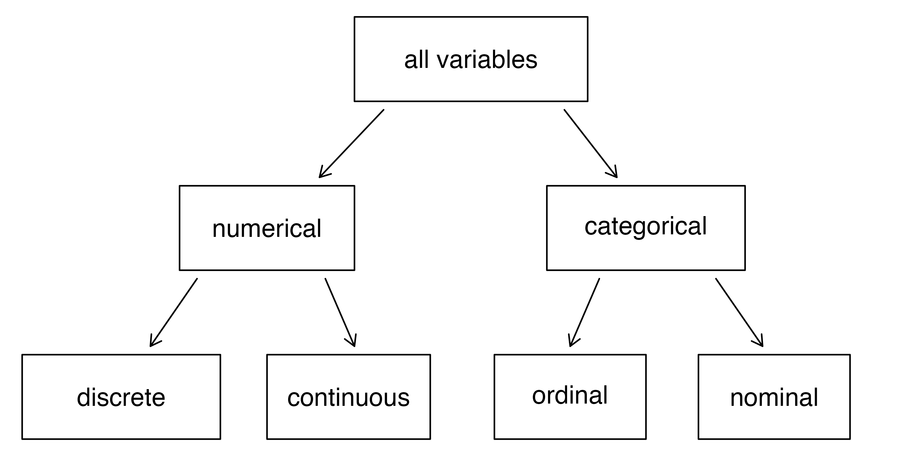
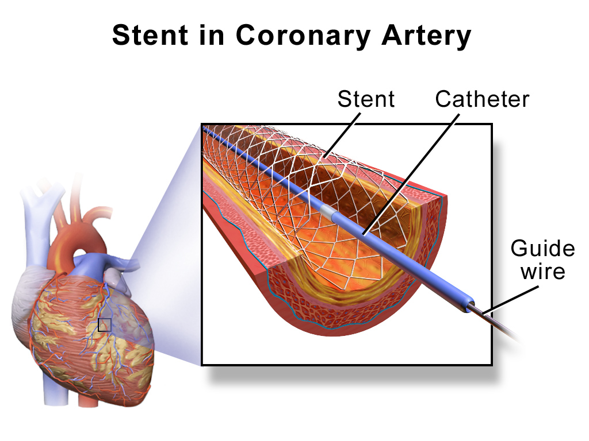
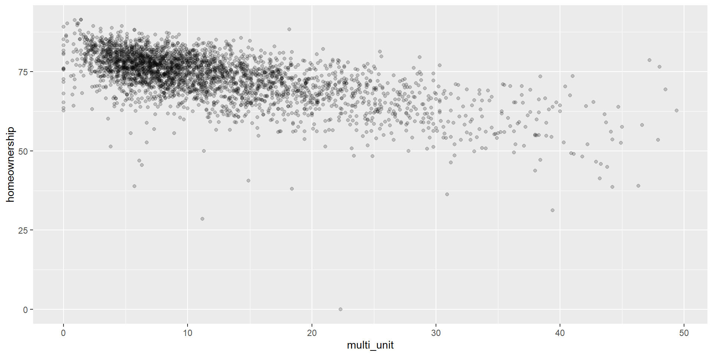
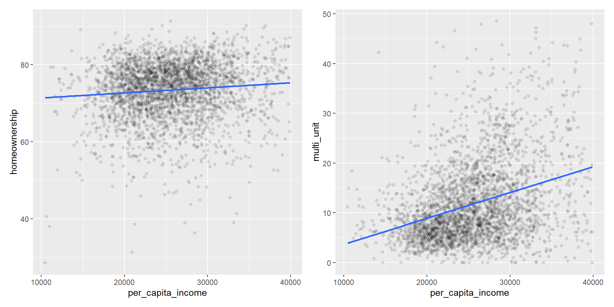
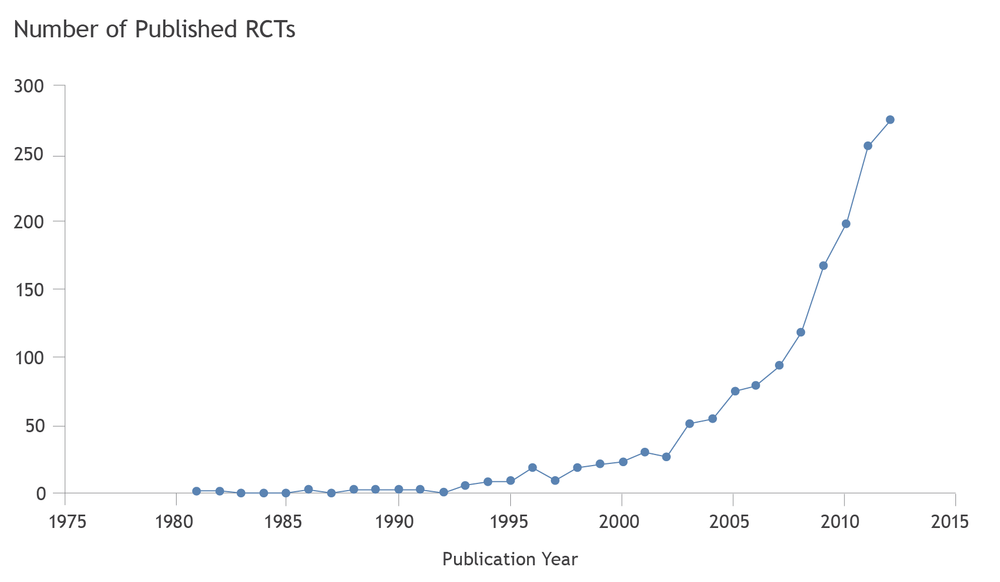

| group | outcome |
|---|---|
| control | no event |
| control | no event |
| treatment | no event |
| treatment | no event |
| treatment | no event |
| treatment | no event |
| treatment | no event |
| control | no event |
| control | no event |
| treatment | no event |
Data
ECON 2B03, Winter 2026
Part A | Lecture 2
Chris Muris, McMaster University
Agenda
Roadmap
- Previously, we:
- Discussed course objectives and organization
- This lecture, we:
- Review basic definitions and concepts in statistics
- See the grand picture of statistics
- Discuss experiments and observational studies
- Set up a self-study on sampling
Readings and homework
- Readings: IMS 1, 2; SZ 1.1, 1.2
- Homework: start on Assignment 0; SZ 1.1: 9, 11, 13, 15; IMS 1: 1.3, 1.7, 1.12; IMS 2: 2.1, 2.7, 2.8, 2.11, 2.13, 2.14, 2.15, 2.16, 2.17, 2.25.
Overview
- Why this matters: understanding data types and study designs is the first step in any statistical analysis — it determines which methods are appropriate.
- What you will learn:
- key definitions: population, sample, parameter, statistic, and variable types
- the difference between experimental and observational data
- why confounding variables complicate causal claims
Part I: Concepts
Basic definitions and concepts in statistics
- Last lecture, we saw definitions of Statistics, descriptive statistics, and inferential statistics
- Inferential statistics is the branch of statistics that draws conclusions about a population based on a sample
- This does not make sense if we do not know what a sample is
- The distinction between population and sample is most important:
- A population is any specific collection of objects of interest
- A sample is any subset or subcollection of the population
- A census is a sample that consists of the whole population
- The information in a sample comes via measurements and sample data
- A measurement is a number or attribute recorded for each member of a population or sample
- The measurements of sample elements are collectively called the sample data
- What we can and want to learn from the sample data:
- A parameter is a number that summarizes some aspect of the population
- A statistic is a number computed from sample data
Car values
- What is the average value of all (millions of) cars on Canadian roads today?
- We cannot assess every single car, so we estimate the average
- We could randomly select 200 cars, record each value, and average them
- To fit this into our framework:
- The set of all vehicles is the population
- The number attached to each one is a measurement
- The average value of all vehicles is the parameter
- The set of 200 cars selected from the population is the sample
- The 200 numbers of the cars we selected are the sample data
- The average value of the 200 vehicles is the statistic
- Additional terminology:
- Individuals refers to the individual unit of observation
- Individuals can be people, animals, households, firms, provinces, and more
- A variable is any characteristic of an individual
- A variable is a quantity, quality, or property that you can measure
- A variable varies among individuals
- Variables are either categorical (qualitative) or numerical (quantitative)
- The distribution of a variable tells us what values it takes and how often
Car values (continued)
- In our example with the value of Canadian cars:
- Individuals are the cars
- The variable is the value of the car
- Other variables could be color, age, make, engine size, and more
- Each variable has a distribution
- In the population, we may have 11.2% of cars that are red, 23% black, 9% white, and so on
- In the population, 1.7% of cars have an engine size \(\leq 1.0\)L and 3.9% have an engine size \(\leq 1.5\)L
- Question: is the distribution in the population the same as the distribution in the sample?
- The following taxonomy of variables is fundamental:

Car colors
- Car color. The color of a car (“yellow”, “red”, “blue”, etc.) is a categorical variable. It is nominal.
Year of study
- Year of study. For the population of McMaster students, the variable “year of study” can be viewed as numerical or categorical. If categorical, it is an ordinal variable. If numerical, it is discrete.
Exercise: variable types (Oreopoulos 2011)
Classify each variable as categorical or numerical. If categorical, decide nominal vs. ordinal. If numerical, decide discrete vs. continuous.
- Table 1: employment status
- Table 1: earnings
- Table 1: highest degree earned
- Table 4: ethnicity of the name on the resume
- Table 4: years of work experience
- Table 4: whether or not a callback was received
- Employment status: categorical, nominal
- Earnings: numerical, continuous
- Highest degree earned: categorical, ordinal
- Ethnicity of name: categorical, nominal
- Years of work experience: numerical, discrete (often measured in years)
- Callback received: categorical, nominal
Sampling variability
Sample statistics vary from sample to sample.
Different random samples give different statistics
Larger samples tend to give more stable estimates
This uncertainty is why we use probability and confidence intervals
Exercise: sampling variability
We take a random sample of 200 cars and compute the average value.
- If we take another random sample of 200 cars, will we get the same average value? Why not?
- No. Different random samples produce different statistics, so the sample mean varies from sample to sample
The grand picture of statistics
- Inferential statistics uses statistics (!) to learn about parameters

Sampling: self-study
- Where does the sample data come from?
- Self-study: study IMS 2.1.3-2.1.5
- Self-study: test yourself with IMS questions 2.13–2.17
Part II: Experimental Data
Experimental data
- The most common task for economists when analyzing data is to find relationships between variables.
- For this, they use both experimental and observational data.
Experimental data. Consider the case study in IMS 1.1.
Population: patients in the U.S. at risk of stroke
Sample: 451 randomly selected patients
Variable 1,
group: treatment vs. controltreatment: received stent + medical managementcontrol: did not receive treatmentPatients are randomly assigned to treatment or control
Variable 2,
outcome: no event vs. strokeno event: no stroke in 365 days after surgerystroke: stroke within 365 days of surgery
- A stent is a tube inserted into a vessel or duct to keep the passageway open

- Let us look at the first ten rows of the data:
- We can stare at the 451 rows. Or, look at a summary:
| group | no event | stroke |
|---|---|---|
| control | 87.7% (199) | 12.3% (28) |
| treatment | 79.9% (179) | 20.1% (45) |
- What is the population in the stent study? Is the 451 a sample or a census?
- Is there a difference between two groups?
- What causes this difference?
- This is an experiment
- We randomized the value of
variable 1 - In large samples, we can attribute the difference in average values of
variable 2tovariable 1 - Here, stent surgery + medical management causes an increase in the proportion of strokes during the next 365 days
- Read IMS 1.1 for more information
Part III: Observational Data
Observational data
- Data in which there is no randomly assigned intervention is called observational data
- Correlation does not imply causation
- Keep this in mind when analyzing observational data
- Next, we look at an example of observational data (IMS 1.2.3)
- What does each row and column represent?
- Find one numerical and one categorical variable
| name | state | pop2000 | pop2010 | pop2017 | pop_change | poverty | homeownership | multi_unit | unemployment_rate | metro | median_edu | per_capita_income | median_hh_income | smoking_ban |
|---|---|---|---|---|---|---|---|---|---|---|---|---|---|---|
| Johnson County | Texas | 126811 | 150934 | 167301 | 8.28 | 11.0 | 76.6 | 8.8 | 3.77 | yes | some_college | 26449.82 | 60458 | none |
| Eureka County | Nevada | 1651 | 1987 | 1961 | -4.34 | 10.0 | 73.1 | 6.7 | 3.05 | no | hs_diploma | 34963.56 | 67159 | partial |
| Greenlee County | Arizona | 8547 | 8437 | 9455 | 6.33 | 11.5 | 46.9 | 6.1 | 5.11 | no | some_college | 25331.52 | 56298 | NA |
| Park County | Colorado | 14523 | 16206 | 17905 | 10.74 | 6.6 | 87.9 | 1.3 | 2.40 | yes | some_college | 33579.74 | 61644 | partial |
| Butler County | Nebraska | 8767 | 8395 | 8053 | -2.15 | 7.8 | 75.3 | 5.1 | 2.77 | no | some_college | 27622.75 | 52448 | NA |
- The following scatter plot visualizes the relationship between
multi_unitandhomeownership:

- When we suspect one variable might explain another:
- Explanatory variable: potential cause or predictor
- Response variable: outcome of interest
- In the plot above, explanatory =
multi_unit, response =homeownership
Exercise: explanatory variable
Think about the homeownership example.
- Can you think of another explanatory variable for
homeownershipin this data set?
- Many options exist, such as
per_capita_income, median age, or unemployment rate
- In our experimental data, we found a negative association between
treatmentandoutcome.- We concluded that stent surgeries have a negative effect.
- The scatter plot above strongly suggests a negative association between a county’s percentage of multi-unit structures and the percentage of households that own their home
- Can we conclude that a government intervention that reduces the number of multi-unit structures would boost homeownership rates?
- Why? Why not?
- Counties with different values of
multi_unitmay differ in other dimensions - This could be driving the negative association:

- In this example,
per_capita_incomediffers between low-multi_unitand high-multi_unitgroups and is related tohomeownership - Such a variable is called a confounding variable, lurking variable, confounding factor, or confounder
- In experimental data, randomization ensures no confounders
- Advanced question: shouldn’t this lead to a positive relationship between
multi_unitandhomeownership? What is going on?
Exercise: education and wages
You document that wages are lower for workers with at most a high school degree than for those with a university degree.
- Can you conclude that changing education causes changes in average wages?
- What are possible confounders?
- No. This is observational, so confounding is likely
- Possible confounders include ability, experience, occupation, and region
- <!—
Experimental and observational data in economics
FYI, not for discussion in class.
Randomized experiments have gained in popularity in economics, as can be seen in this graph on publications in top academic journals in economics, via Banerjee et al. (2016):

- Economists’ use of randomized experiments includes:
- The study of human behavior in the lab (Nobel prize 2002: Kahnemann and Smith)
- The study of policy interventions in the context of development economics (Nobel prize 2019: Banerjee, Duflo, Kremer)
- A/B testing for tech companies
- and for policy evaluation in many other subfields of economics, such as health economics; the economics of education; labor economics; and in the Oreopoulos example that opened this course.
- Still, the majority of empirical work in economics uses observational data, using tools from regression analysis. Even more Nobels for observational data:
2021, Angrist, Card, Imbens, on natural experiments
2015, Deaton, for analysis of consumption, poverty, and welfare
2013, Fama, L.P. Hansen, and Shiller, for empirical analysis of asset prices
2011, …
2003, …
2000, Heckman and McFadden, for microeconometrics and selection
1989, …
1984, …
1980, …
1969, Frisch and Tinbergen, for theoretical and applied work with dynamic models for economic processes
(The remaining Nobel prizes are for work that has a large economic theory component.)
- –>
Exercises
Exercise: air pollution and birth outcomes (IMS 2.3)
Researchers collected data on 143,196 births in Southern California (1989–1993) and measured air pollution exposure during gestation.
- Identify the population of interest and the sample in this study
- Are these variables numerical or categorical?
- Can the results be generalized to the population? Can they establish causality?
- Population: all births in Southern California during 1989–1993
- Sample: the 143,196 births in the data
- Length of gestation is numerical; air pollution exposure is numerical
- Generalizability depends on the sampling strategy; the study is observational, so causality is not guaranteed
Conclusion
These slides started from J. S. Racine’s slides for ECON2B03 at McMaster University.
Readings are from
- SZ: D. Shafer and Z. Zhang (2012), “Introductory Statistics”
- IMS: M. Çetinkaya-Rundel and J. Hardin (2023), “Introduction to Modern Statistics”
References
James, G., Witten, D., Hastie, T., & Tibshirani, R. (2013). An Introduction to Statistical Learning (Vol. 103). Springer New York. https://doi.org/10.1007/978-1-4614-7138-7
Oreopoulos, Philip (2011), “Why Do Skilled Immigrants Struggle in the Labor Market? A Field Experiment with Thirteen Thousand Resumes.” American Economic Journal: Economic Policy 3(4).